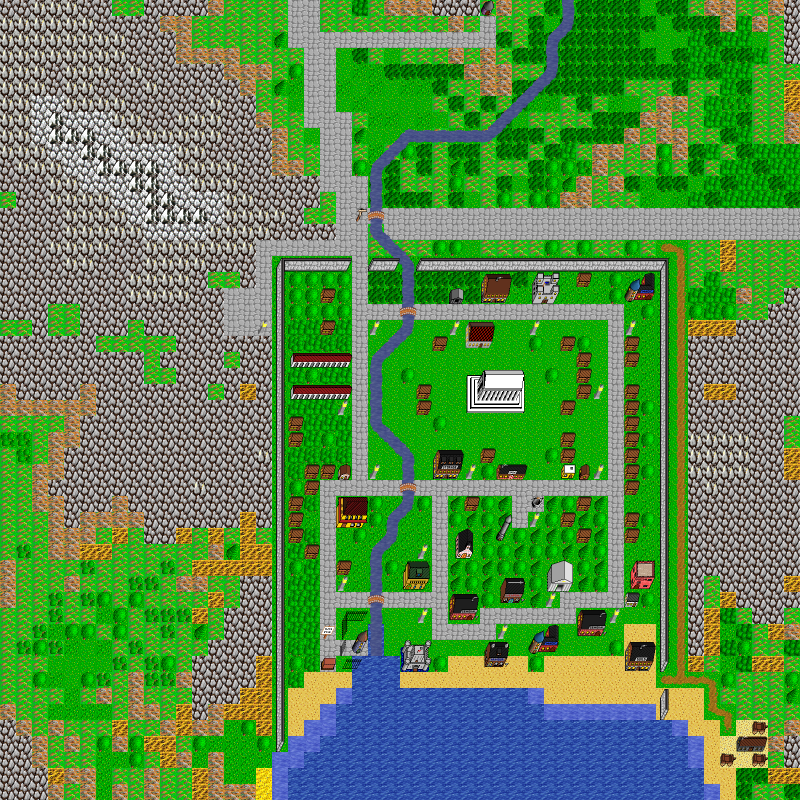

world_107_123
Map world_107_123, in region Brest. Map level: 1.
Map view:

(click for larger view)
Exits from this map:
Exits to this map:
- A Small Shop
- Acme Inc. of Brest, First Floor
- Administration, Level 1
- Amphis
- Apartments
- Brest Armour
- Brest CVT
- Brest Food Store
- Brest Imperial Post Office
- Brest Inn
- Brest Magic
- Brest Seaside Tavern
- Brest Town House
- Brest Trade Market
- Brest Weapons
- Castle of Brittany, Entrance
- Castle of Brittany, Finale
- Cloud World de City
- Draughts House of Brest
- Electric Jes
- Fortress of Lord Butakis Prison, Heavily Guarded Chamber
- Guild of Black Shield, Main Floor
- Guild of Black Shield, Storage Room
- Guild of Damned Heretics, Main Floor
- Guild of Dreaming Sage, Main Floor
- Guild of Drunken Barbarian, Main Floor
- Guild of Green Goblin, Main Floor
- Guild of Ketsueki Itsuryuu, Main Floor
- Guild of Laughing Skull, Main Floor
- Guild of Mailed Fist, Main Floor
- Guild of Mockers, Main Floor
- Guild of Nenshou Youso, Main Floor
- Guild of Poisoned Dagger, Main Floor
- Guild of Purple Butterfly, Main Floor
- Guild of Smoking Cauldron, Main Floor
- Guild of Zaseki Dzuki Ryoku, Main Floor
- Hall of Dungeon Masters
- Kingdom Palace, Entrance
- Lake Country Dragon Hangar
- Lone Town Dragon Hangar
- Lone Town's Ye Olde Shoppe of Transport
- Nasty House
- Navar Dragon Hangar
- Nurnberg Dragon Hangar
- Pantheon
- Playershops
- Playershops
- Scrolls Galore
- Shrine of Valkyrie
- Sport Center
- Stoneville Dragon Hangar
- Strange Old Wizard
- Tower of Ludo, Level 1
- Tower of Ludo, Level 2
- Tower of Zoon
- Tower of Zoon, Level 1
- Underground River 1
- Underground, Level 1
- Wolfsburg's Ye Olde Shoppe of Transport
- world_106_123
- world_107_122
- world_107_124
- world_108_123
No monster on this map.
Brest's map index | Region index | Global map index | World map
{kind=link}